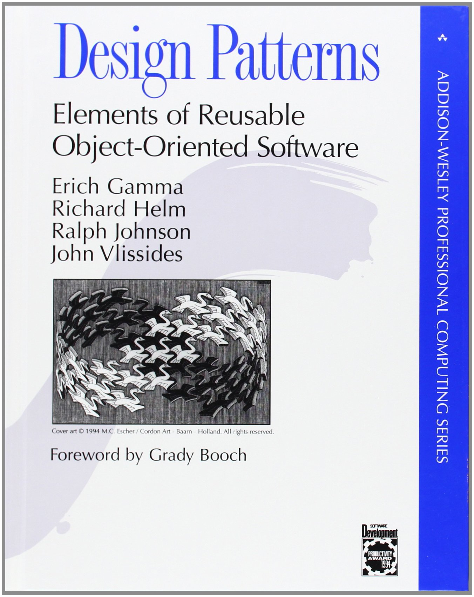

CO886: Software Engineering
Large software architectures
Tomas Petricek
email: t.petricek@kent.ac.uk
twitter: @tomaspetricek
office: S129A
{kind=link}
Software Architecture
Software Architecture
Planning a system before it is built
High-level overview of components
Christopher Alexander
A Quality
Without a Name
Feeling of satisfaction and contentment engendered by good building
Design patterns
Gang of Four Patterns
- Solutions to common problems
- Specific small-scale scenarios
- Workarounds for Java limitations
Beyond Gang of Four
- Balancing of design forces
- Quality without a name
- Architectural patterns/styles

Architectural style
How you approach the problem?
Form follows function ideal of modernism
Architectural patterns
Thinking about large software systems
How is system divided into components?
How is development divided into teams?
How components communicate with each other?
Styles do not prescribe specific implementation!
Component architectures
Component architectures
What are the components & how they communicate
How is the problem divided into component?
What components talk to what other components?
How is the communication set-up?
What teams work on what parts of the system?

Layered architecture
Components in several layers
Can only call components from one layer below!
Layered architectures
Typical use cases for the pattern
Operating system with kernel, system, user processes
Enterprise with presentation, business & persistence
Web apps with web page, server and database
Network stack TCP/IP protocol and such
Layered architecture

Potential advantages
- Can replace individual layers
- Layers need only limited info
- Can be built independently
Potential problems
- May lead to inefficient systems
- Changes may be hard to make

Three-tier architecture
Client-side code
Server-side code
Database
Communication over network
Different langua- ges in each layer

Service-oriented architecture
Services that call each other
Different services implement different functionality
Service-oriented architectures
Services in a sample retail system
Order management service to take orders
Warehouse management service to manage stock
Shipping service to handle delivery
Customer relationship service for communication
Service-oriented architectures
Implementing SOA
- Service description
- Service discovery
- Service deployment
Pros and cons
- Separation of logic and teams
- Can get heavy-weight and complex
Microservices
A more modern take on service-orientation
Simpler communication via REST
Each service can use different language
Still need discovery and message queues
Can use auto-scaling in cloud (Kubernetes etc.)
Publish subscribe pattern

Information exchange
- Who needs to be called?
- Publish events to anyone
- Subscribe by category or type
Application areas
- Information exchange in finance systems
- RSS feeds for blogs & news
- Anything aiming for large extensibility
Information management
Information management
How can information be managed & stored?
How to pass information in complex processing?
How to facilitate efficient sharing?
What component can access what information when?
How to avoid losing information on error?

Pipeline architecture
Data processed in a sequence of steps
Think UNIX pipelines!
Data science and scientific computing
Pipeline architecture

Potential benefits
- Small composable blocks
- Different ways of connecting
- Easy to add more tools
Open questions
- Format of data passed in between
- UNIX shell vs. Microsoft PowerShell
- Works if data is of a same kind

Blackboard architecture
Data shared globally
Many different processors can access and transform it
For example, analysing natural language
Pipeline architecture

Implementation
- Choosing common data representation
- Resolving conflicting solutions
- Component implementation
Application areas
- There is no complete solution
- Natural language processing
- Classic AI like expert systems

Event sourcing architecture
Any action in the application is an event
Store events,
not final state!
Banking systems that cannot lose data
Event sourcing architecture

Implementation
- Suitable event representation
- Event store to keep events
State * Event -> Statefunction
Application areas
- Financial software systems
- Functional programming (fold)
- Reactive programming (Elm language)
Summary
Large software architectures
Software architecture and patterns
Seeking quality without a name
Gang of Four patterns and beyond
Component-based architectures
Layers and three-tier web applications
From services to microservices
Information-oriented architectures
Pipeline in UNIX and Blackboard in AI
Event-sourcing architecture for reliability
CO886: Large software architectures
What you should remember from this lecture
- Different architectural patterns discussed
- Microservice are widely used today!
- Event sourcing is great in certain areas!
Tomas Petricek
t.petricek@kent.ac.uk | @tomaspetricek
References
Books
- Richard P. Gabriel (1996) Patterns of Software
- Frank Buschmann et al. (1996) Patterns-Oriented Software Architecture, vol 1